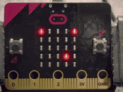
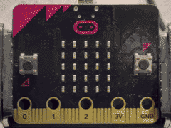
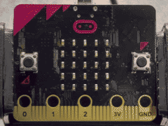
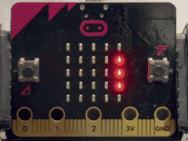
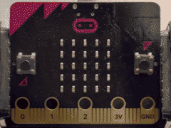

🎯数あてゲーム 🎯数当てゲーム
このプログラムでは、micro:bitを使って、数あてゲームを作ります。 このプログラムでは、micro:bitを使って、数当てゲームを作ります。
使い方
- Bボタンをおして、画面に出たドットの数にあわせて数字を入力 Bボタンを押して、画面に出たドットの数に合わせて数字を入力
- Aボタンをおしてせいかいかどうかをたしかめる Aボタンを押して正解かどうかを確かめる
- せいかいすると「にっこりした顔」、まちがえると「かなしい顔」をひょうじ 正解すると「うれしい顔」、まちがえると「悲しい顔」を表示

ねらい
- 数のりかい 数の理解
- じょうけん分けの考え方を学ぶ 条件分けの考え方を学ぶ
チャレンジ
- スコアきのうをつける スコア機能をつける
- 数のはんいを広げる 数の範囲を広げる
- タイムアタックルールのついか タイムアタックルールの追加
🚩はた上げゲーム 🚩旗上げゲーム
このプログラムでは、micro:bitを使って、はた上げゲームで遊ぶことができます。 このプログラムでは、micro:bitを使って、旗上げゲームで遊ぶことができます。
使い方
- LEDに「はた」が左向きまたは右向きにランダムに出る LEDに「旗」が左向きまたは右向きにランダムに出る
- 出た向きにあわせて、Aボタン（左）またはBボタン（右）をおす 出た向きに合わせて、Aボタン（左）またはBボタン（右）を押す
- せいかいすると「にっこりした顔」、まちがえると「かなしい顔」を表示 正解すると「にっこりした顔」、間違えると「悲しい顔」を表示

ねらい
- はんしゃしんけいをきたえる 反応神経を鍛える
- はんだん力をきたえる 判断力を鍛える
- プログラミングのきそにふれる プログラミングの基礎に触れる
チャレンジ
- れんぞくせいかいしたらスピードアップする 連続正解したらスピードアップする
- スコアきのうをつける スコア機能をつける
🎲サイコロゲーム 🎲サイコロゲーム
このプログラムでは、micro:bitを使って、サイコロゲームで遊ぶことができます。 このプログラムでは、micro:bitを使って、サイコロゲームで遊ぶことができます。
使い方
- らんすうのしくみを使って、1〜6の数字をつぎつぎにひょうじ 乱数の仕組みを使って、1〜6の数字を次々に表示
- Bボタンで数字を決定 Bボタンで数字を決定
- 数秒後にらんすうひょうじにもどる 数秒後に乱数表示に戻る

ねらい
- らんすう（ランダムな数）のはたらきを学ぶ 乱数（ランダムな数）の働きを学ぶ
- プログラミングのきそにふれる プログラミングの基礎に触れる
チャレンジ
- らんすうのひょうじかんかくをかえて、よりリアルなサイコロのように見せる 乱数の表示間隔を変えて、よりリアルなサイコロのように見せる
- Aボタンで一時ていし・さいかいするきのうをつける Aボタンで一時停止・再開する機能をつける
⏱️体内時計チャレンジゲーム ⏱️体内時計チャレンジゲーム
このプログラムでは、micro:bitを使って、体内時計チャレンジで遊ぶことができます。 このプログラムでは、micro:bitを使って、体内時計チャレンジで遊ぶことができます。
使い方
- 起動すると「Go」をひょうじしてタイマーがスタート 起動すると「Go」を表示してタイマーがスタート
- 自分のかんかくで5秒がたったと思ったタイミングでBボタンをおす 自分の感覚で5秒が経ったと思ったタイミングでBボタンを押す
- 5秒台なら「にっこりした顔」、それいがいは「すぎた秒数」をひょうじ 5秒台なら「にっこりした顔」、それ以外は「過ぎた秒数」を表示
- Aボタンをおして再スタート Aボタンを押して再スタート

ねらい
- 時間のかんかくを体で学ぶ 時間の感覚を体で学ぶ
- タイマーのしくみや、じょうけん分けのプログラミングについて学ぶ タイマーの仕組みや、条件分けのプログラミングについて学ぶ
チャレンジ
- ごさ（せいかいからずれた秒数）をスクロールでひょうじしてみる 誤差（正解からずれた秒数）をスクロールで表示してみる
- よりせいかくに5秒を止められるようにくふうする より正確に5秒を止められるように工夫する
- 10秒や15秒モードを追加するプログラムを作ってみる 10秒や15秒モードを追加するプログラムを作ってみる
🔘カチカチカウンター 🔘カチカチカウンター
このプログラムでは、micro:bitを使って、数をかぞえるカウンターを作ります。 このプログラムでは、micro:bitを使って、数を数えるカウンターを作ります。
使い方
- Bボタンをおすたびに、数が一つずつふえる Bボタンを押す度に、数が一つずつ増える
- Aボタンをおすと、数が0にもどる Aボタンを押すと、数が0に戻る
- 画面に今の数がひょうじされる 画面に今の数が表示される

ねらい
- くりかえしの数をきろくして、「何回やったか」を見えるようにする 繰り返しの数を記録して、「何回やったか」を見えるようにする
- 算数の「ぞうげん」や「数のふえ方」のりかいにつなげる 算数の「増減」や「数の増え方」の理解につなげる
- 生活のなかで「やったこと」をカウントする 生活のなかで「やったこと」をカウントする
チャレンジ
- 2人でかわりばんこにボタンをおして、数くらべたいせんをする 2人で代わりばんこにボタンを押して、数比べ対戦をする
- 活動ごとのカウントをグラフにして見えるようにする 活動ごとのカウントをグラフにして見えるようにする
- 「100回までがんばろう！」などのもくひょうカウントとして使う 「100回までがんばろう！」などの目標カウントとして使う
本情報の内容 (添付文書、リンク先などを含む) は、作成日時点でのものであり、予告なく変更される場合があります。